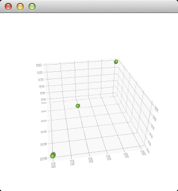

Q3DScatter Class
The Q3DScatter class provides methods for rendering 3D scatter graphs. More...
| Header: | #include <Q3DScatter> |
| CMake: | find_package(Qt6 REQUIRED COMPONENTS DataVisualization) target_link_libraries(mytarget PRIVATE Qt6::DataVisualization) |
| qmake: | QT += datavisualization |
| Since: | QtDataVisualization 1.0 |
| Inherits: | QAbstract3DGraph |
Properties
- axisX : QValue3DAxis*
- axisY : QValue3DAxis*
- axisZ : QValue3DAxis*
- selectedSeries : QScatter3DSeries* const
Public Functions
| Q3DScatter(const QSurfaceFormat *format = nullptr, QWindow *parent = nullptr) | |
| virtual | ~Q3DScatter() |
| void | addAxis(QValue3DAxis *axis) |
| void | addSeries(QScatter3DSeries *series) |
| QList<QValue3DAxis *> | axes() const |
| QValue3DAxis * | axisX() const |
| QValue3DAxis * | axisY() const |
| QValue3DAxis * | axisZ() const |
| void | releaseAxis(QValue3DAxis *axis) |
| void | removeSeries(QScatter3DSeries *series) |
| QScatter3DSeries * | selectedSeries() const |
| QList<QScatter3DSeries *> | seriesList() const |
| void | setAxisX(QValue3DAxis *axis) |
| void | setAxisY(QValue3DAxis *axis) |
| void | setAxisZ(QValue3DAxis *axis) |
Signals
| void | axisXChanged(QValue3DAxis *axis) |
| void | axisYChanged(QValue3DAxis *axis) |
| void | axisZChanged(QValue3DAxis *axis) |
| void | selectedSeriesChanged(QScatter3DSeries *series) |
Detailed Description
This class enables developers to render scatter graphs in 3D and to view them by rotating the scene freely. Rotation is done by holding down the right mouse button and moving the mouse. Zooming is done by mouse wheel. Selection, if enabled, is done by left mouse button. The scene can be reset to default camera view by clicking mouse wheel. In touch devices rotation is done by tap-and-move, selection by tap-and-hold and zoom by pinch.
If no axes are set explicitly to Q3DScatter, temporary default axes with no labels are created. These default axes can be modified via axis accessors, but as soon any axis is set explicitly for the orientation, the default axis for that orientation is destroyed.
Q3DScatter supports more than one series visible at the same time.
How to construct a minimal Q3DScatter graph
First, construct Q3DScatter. Since we are running the graph as top level window in this example, we need to clear the Qt::FramelessWindowHint flag, which gets set by default:
Q3DScatter scatter; scatter.setFlags(scatter.flags() ^ Qt::FramelessWindowHint);
Now Q3DScatter is ready to receive data to be rendered. Add one series of 3 QVector3D items:
QScatter3DSeries *series = new QScatter3DSeries; QScatterDataArray data; data << QVector3D(0.5f, 0.5f, 0.5f) << QVector3D(-0.3f, -0.5f, -0.4f) << QVector3D(0.0f, -0.3f, 0.2f); series->dataProxy()->addItems(data); scatter.addSeries(series);
Finally you will need to set it visible:
scatter.show();
The complete code needed to create and display this graph is:
#include <QtDataVisualization> int main(int argc, char **argv) { qputenv("QSG_RHI_BACKEND", "opengl"); QGuiApplication app(argc, argv); Q3DScatter scatter; scatter.setFlags(scatter.flags() ^ Qt::FramelessWindowHint); QScatter3DSeries *series = new QScatter3DSeries; QScatterDataArray data; data << QVector3D(0.5f, 0.5f, 0.5f) << QVector3D(-0.3f, -0.5f, -0.4f) << QVector3D(0.0f, -0.3f, 0.2f); series->dataProxy()->addItems(data); scatter.addSeries(series); scatter.show(); return app.exec(); }
And this is what those few lines of code produce:

The scene can be rotated, zoomed into, and an item can be selected to view its position, but no other interaction is included in this minimal code example. You can learn more by familiarizing yourself with the examples provided, like the Scatter Graph.
See also Q3DBars, Q3DSurface, and Qt Data Visualization C++ Classes.
Property Documentation
axisX : QValue3DAxis*
This property holds the active x-axis.
Access functions:
| QValue3DAxis * | axisX() const |
| void | setAxisX(QValue3DAxis *axis) |
Notifier signal:
| void | axisXChanged(QValue3DAxis *axis) |
axisY : QValue3DAxis*
This property holds the active y-axis.
Access functions:
| QValue3DAxis * | axisY() const |
| void | setAxisY(QValue3DAxis *axis) |
Notifier signal:
| void | axisYChanged(QValue3DAxis *axis) |
axisZ : QValue3DAxis*
This property holds the active z-axis.
Access functions:
Notifier signal:
| void | axisZChanged(QValue3DAxis *axis) |
[read-only] selectedSeries : QScatter3DSeries* const
This property holds the selected series or null.
Access functions:
| QScatter3DSeries * | selectedSeries() const |
Notifier signal:
| void | selectedSeriesChanged(QScatter3DSeries *series) |
Member Function Documentation
[explicit] Q3DScatter::Q3DScatter(const QSurfaceFormat *format = nullptr, QWindow *parent = nullptr)
Constructs a new 3D scatter graph with optional parent window and surface format.
[virtual noexcept] Q3DScatter::~Q3DScatter()
Destroys the 3D scatter graph.
void Q3DScatter::addAxis(QValue3DAxis *axis)
Adds axis to the graph. The axes added via addAxis are not yet taken to use, addAxis is simply used to give the ownership of the axis to the graph. The axis must not be null or added to another graph.
See also releaseAxis(), setAxisX(), setAxisY(), and setAxisZ().
void Q3DScatter::addSeries(QScatter3DSeries *series)
Adds the series to the graph. A graph can contain multiple series, but has only one set of axes. If the newly added series has specified a selected item, it will be highlighted and any existing selection will be cleared. Only one added series can have an active selection.
See also QAbstract3DGraph::hasSeries().
QList<QValue3DAxis *> Q3DScatter::axes() const
Returns the list of all added axes.
See also addAxis().
QValue3DAxis *Q3DScatter::axisZ() const
Returns the used z-axis.
Note: Getter function for property axisZ.
See also setAxisZ().
void Q3DScatter::releaseAxis(QValue3DAxis *axis)
Releases the ownership of the axis back to the caller, if it is added to this graph. If the released axis is in use, a new default axis will be created and set active.
If the default axis is released and added back later, it behaves as any other axis would.
See also addAxis(), setAxisX(), setAxisY(), and setAxisZ().
void Q3DScatter::removeSeries(QScatter3DSeries *series)
Removes the series from the graph.
See also QAbstract3DGraph::hasSeries().
QList<QScatter3DSeries *> Q3DScatter::seriesList() const
Returns the list of series added to this graph.
See also QAbstract3DGraph::hasSeries().
void Q3DScatter::setAxisX(QValue3DAxis *axis)
Sets axis as the active x-axis. Implicitly calls addAxis() to transfer the ownership of the axis to this graph.
If axis is null, a temporary default axis with no labels and an automatically adjusting range is created. This temporary axis is destroyed if another axis is set explicitly to the same orientation.
Note: Setter function for property axisX.
See also axisX(), addAxis(), and releaseAxis().
void Q3DScatter::setAxisY(QValue3DAxis *axis)
Sets axis as the active y-axis. Implicitly calls addAxis() to transfer the ownership of the axis to this graph.
If axis is null, a temporary default axis with no labels and an automatically adjusting range is created. This temporary axis is destroyed if another axis is set explicitly to the same orientation.
Note: Setter function for property axisY.
See also axisY(), addAxis(), and releaseAxis().
void Q3DScatter::setAxisZ(QValue3DAxis *axis)
Sets axis as the active z-axis. Implicitly calls addAxis() to transfer the ownership of the axis to this graph.
If axis is null, a temporary default axis with no labels and an automatically adjusting range is created. This temporary axis is destroyed if another axis is set explicitly to the same orientation.
Note: Setter function for property axisZ.
See also axisZ(), addAxis(), and releaseAxis().